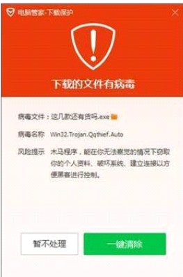
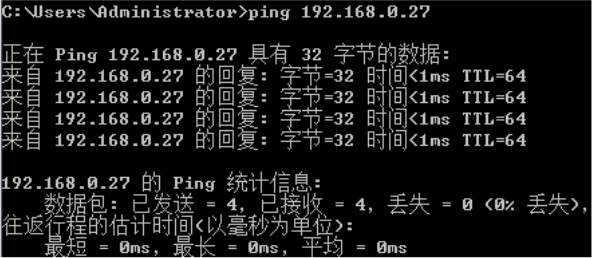
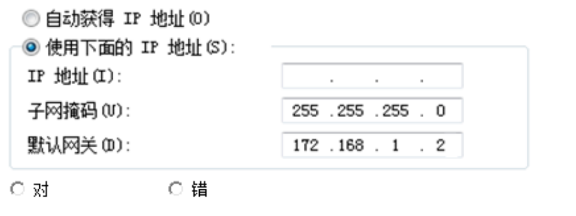
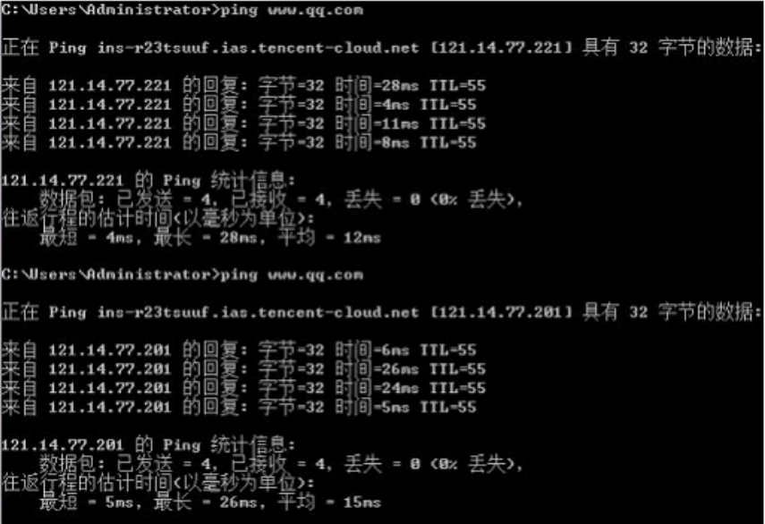

1.要将网页上的图片保存到本地计算机中，应该在图片上单击鼠标右键，选择快捷菜单中的 “复制图片” 命令。
要将网页上的图片保存到本地计算机，应在图片上单击鼠标右键选择“图片另存为”命令，而非“复制图片”命令
2.利用搜索引擎搜索到的结果，越排在前面的信息越权威、越真实可靠。
搜索引擎搜索结果排序受多种因素影响，并非单纯依据信息的权威性和真实性，比如商业推广等因素也会影响排序，所以越排在前面的信息不一定越权威、真实可靠
3.某同学利用计算机技术入侵学校服务器并留下一个搞笑动画，他的行为违反了学校规定，但没有违法。
未经授权入侵学校服务器属于违法行为，违反了《中华人民共和国网络安全法》等相关法律法规，并非仅仅违反学校规定
4.分别在百度和 360 搜索中输入同样的关键词 “5G 手机” 进行搜索，得到的搜索结果不完全相同。
百度和360搜索拥有不同的搜索算法、数据抓取范围及索引机制，所以对相同关键词的搜索结果通常会存在差异
5.在网上搜索资料时，遇到喜欢的网页可以通过浏览器的 “收藏” 功能将网页内容保存到浏览器上。
浏览器的‘收藏’功能主要是保存网页的网址，并非网页内容本身。若要保存网页内容，需使用浏览器的‘另存为’等功能
6.浏览器浏览过的网页，网页地址会存放到浏览器的历史记录中。
浏览器通常会自动记录用户浏览过的网页地址，方便用户快速回访，这些记录就存放在浏览器的历史记录中
7.小明的电脑突然出现故障上不了网，这一定是操作系统出了问题。
电脑上不了网原因众多，可能是网络连接问题，如网线松动、路由器故障；也可能是网络服务提供商的问题，不一定是操作系统故障
8.有两个关键词：无人驾驶汽车、“无人驾驶汽车”，在百度搜索引擎中分别使用这两个关键词进行搜索，得到的结果不完全相同。
在百度搜索引擎中，带引号的关键词会被作为一个精确匹配的词组进行搜索，而不带引号的关键词，搜索引擎会根据自身算法对包含该词的相关内容进行宽泛匹配，所以两者搜索结果不完全相同
9.微信是朋友之间进行信息交流和分享的平台，可以通过手机、平板、电脑等设备登录后发布信息。
微信支持多平台使用，用户能够借助手机、平板、电脑等多种设备登录，实现朋友间信息交流与分享，还能在各设备上发布信息
10.某同学经常破解各种正版软件免费分享给同学们使用，这行为是值得鼓励的，没有违反网络道德规范。
破解正版软件并免费分享属于侵权行为，严重违反网络道德规范与相关法律法规，侵害软件开发者权益，破坏软件产业生态
11.在组建局域网时，可以将资源服务器的 IP 地址设置为 192.168.1.255。
192.168.1.255 通常被用作 192.168.1.0/24 网段的广播地址，不能分配给资源服务器作为固定 IP 地址，否则会导致网络通信异常
12.黑客是一群专门研究系统漏洞的计算机专家，对维护系统安全做出了自己的贡献。
虽然部分黑客研究系统漏洞并协助修复以维护系统安全，但更多时候提到的黑客是指利用系统漏洞进行非法活动，如窃取数据、破坏系统等，给个人、企业乃至社会带来危害，并非单纯做贡献
13.在网络上分享自己日常生活心得时，要注意保护个人信息，避免暴露个人隐私，如姓名、电话、家庭住址等。
在网络分享日常心得时，网络环境复杂，若暴露姓名、电话、家庭住址等个人隐私信息，可能会被不法分子利用，导致个人安全与权益受损，所以需注意保护
14.在现实生活中，分处两地的人们除了能够通过打电话、发短信等方式进行沟通交流，还可以使用信息交流软件来进行，常见的信息交流软件有微信、钉钉、QQ、支付宝等软件。
微信、QQ是常用社交软件，支持文字、语音、视频等交流方式。钉钉是办公通讯工具，能用于工作沟通。支付宝虽以支付为主，但也有聊天功能，可用于一定场景下的沟通，所以分处两地的人们可以通过这些软件进行交流。
15.为保护个人隐私不受侵犯，不能在公共计算机上登录 QQ、微信等社交软件。
虽然理论上可以在公共计算机上登录QQ、微信等社交软件，但公共计算机使用人员繁杂，可能存在安全风险，如被安装恶意软件用于窃取账号信息、窥探聊天记录等。尽管并非绝对不能登录，但为保护个人隐私，应尽量避免在公共计算机登录此类软件。
16.我们在利用网络通讯软件与别人交流时，要自觉遵守信息社会的法律、规范和道德。
网络通讯软件是信息交流重要平台，网络空间并非法外之地，遵守法律、规范和道德，能营造健康有序交流环境，保障各方合法权益，促进网络空间良性发展。
17.下载文件时电脑管家软件弹出如下警告，应该关闭提示继续下载安装。

电脑管家弹出警告，意味着该下载文件很可能存在风险，比如可能包含恶意代码、文件来源不可信等。若关闭提示继续下载安装，极有可能导致电脑遭受恶意软件攻击，致使个人信息泄露、系统功能受损等不良后果。所以不应关闭提示继续下载安装。
18.只要 DNS 地址配置错误，计算机就不能访问互联网上的网站。
虽然DNS负责将网站域名解析为IP地址，配置错误时计算机无法通过域名正常访问网站。但计算机可直接输入网站IP地址访问，且部分设备或网络环境可能自动获取正确DNS，实现绕过错误配置的DNS上网。所以不能绝对说DNS地址配置错误，计算机就完全不能访问互联网上的网站。
19.校园公共无线网络通过DHCP协议来自动分配IP地址，手机每次接入该网络后，获取的IP地址都是不变的。
DHCP是自动为接入设备动态分配IP地址的协议。在校园公共无线网络中，因设备接入和离开频繁且IP资源有限，手机每次接入时，DHCP服务器会依据当前IP使用情况，从可用IP地址池中分配IP，所以每次获取的IP地址可能不一样，并非固定不变。
20.信息技术的发展让我们获取资讯更便捷，可以足不出户便知天下事，因而它对现实生活的影响都是积极有益的。
诚然，信息技术的发展极大地提升了资讯获取的便捷性，为人们带来众多积极影响，像促进知识的广泛传播、实现高效的信息共享等。然而，它并非全然有利，也存在一些消极方面。例如，信息的过量涌现容易使人们注意力难以集中，虚假信息的肆意传播会误导大众，网络犯罪现象的增多对个人及社会安全构成威胁，并且还可能出现隐私泄露的情况，给个人生活带来诸多麻烦。所以，不能片面地认为信息技术对现实生活的影响全是积极有益的。
21.网络不是法外之地，在上网时要规范网络用语，避免言论不当。
网络是现实社会的延伸，同样受法律和道德的约束。规范网络用语、避免不当言论，有助于维护健康有序的网络环境，保障公众合法权益，促进网络空间的和谐发展。不当言论可能引发网络暴力、传播有害信息等不良后果，破坏网络生态，因此上网需谨言慎行。
22.在网络上可以匿名，所以可以肆意发表侮辱他人的言论，不用担心被人知道。
虽然网络具有一定匿名性，但这绝不意味着能肆意发表侮辱他人的言论。网络并非法外之地，即使匿名也可通过技术手段追踪到发布者。侮辱他人言论侵犯他人名誉权，违反《中华人民共和国民法典》相关规定，严重时还可能触犯《中华人民共和国刑法》。我们应遵守法律法规和道德准则，文明上网。
23.在浏览器的地址栏中，输入“www.baidu.com”和输入“14.215.177.38”都可以访问百度网站，这种IP和域名之间的转化是由浏览器完成的。
虽然在浏览器地址栏输入“www.baidu.com”与“14.215.177.38”均可访问百度网站，但IP和域名之间的转换工作是由域名系统（DNS）服务器来承担的，并非浏览器。DNS服务器的核心功能就是把便于人们记忆的域名解析成计算机可识别处理的IP地址，以此达成网络访问。
24.使用ping命令可以检查两台计算机之间的网络连接是否正常。
ping命令通过向目标计算机发送ICMP（Internet控制消息协议）回显请求数据包，并等待接收回显应答数据包，以此来判断两台计算机之间网络连接是否正常。若能收到正常回应，说明网络连接基本畅通；若超时或无法收到回应，则表明网络连接可能存在问题，比如网络中断、目标主机不可达等。
25.安装软件时，只要是从网上可以下载到的应用软件安装包，都可以直接给电脑安装相应的应用，并不会使电脑中病毒。
虽然能从网上下载应用软件安装包，但网络环境复杂，并非所有来源可靠。一些恶意软件开发者会将病毒或恶意程序捆绑在看似正常的安装包中，用户直接安装后，病毒可能感染电脑，导致数据泄露、系统被控制、性能下降等不良后果。下载安装软件应选官方正规渠道，确保安全性。
26.在浏览器的地址栏中输入网页地址 “http://www,qq,com”，按回车键后没有正常打开腾讯网，原因是网页地址输错了。
给定地址“http://www,qq,com”中腾讯网正确域名分隔符应为“.”此处错误使用“,”致使地址格式错误浏览器无法正确解析到腾讯网服务器因此无法正常打开腾讯网原因就是网页地址输错了。
27.在AI时代，文字、声音、图像和视频都有可能是深度合成的，不法分子通常会利用AI技术实行诈骗，因此，在现实生活中我们应时时提高警惕，以防上当受骗。
在AI时代，深度合成技术使得文字、声音、图像和视频都有被伪造的可能，不法分子常借此实施诈骗，例如利用合成的逼真声音进行语音诈骗，或者使用虚假的图像和视频误导受害者。现实生活中信息繁杂难辨真假，提高警惕有助于我们识别潜在的诈骗风险，保护个人财产与信息安全，避免上当受骗。
28.中学生自制能力比较差，容易沉迷于网络，在学习和生活中应当避免使用一切电子类产品。
虽然中学生自制能力相对薄弱确实容易沉迷网络但不能因噎废食完全避免使用一切电子类产品。电子类产品在学习和生活中有诸多益处比如借助学习类软件、在线课程资源能拓展知识面利用电子词典辅助学习语言；生活中手机、电脑方便与他人沟通交流、获取各类信息。合理使用电子类产品能为中学生的学习和生活带来积极影响关键在于引导中学生提升自制能力正确、适度使用。
29.使用互联网时要遵守青少年网络公约远离内容不健康的网站。
《青少年网络公约》为青少年在网络环境中的行为提供了准则旨在引导青少年文明上网、健康用网。内容不健康的网站如包含暴力、色情、反动等信息的网站可能会对青少年的身心健康造成严重危害影响其价值观和世界观的形成。遵守公约并远离此类网站有助于青少年营造健康的网络环境保护自身免受不良信息的侵害。
30.使用网络防火墙的主要作用是用来加强网络之间的访问控制。
网络防火墙是一种位于内部网络与外部网络之间的网络安全系统通过监测、限制、更改跨越防火墙的数据流尽可能地对外部屏蔽内部网络的信息、结构和运行状况以此来加强网络之间的访问控制保护内部网络免受非法入侵和恶意攻击确保网络安全。
31.在日常使用手机时,不要轻易点击未知来源的短信链接和彩信,避免手机信息的泄露,甚至感染病毒。
未知来源的短信链接和彩信可能隐藏着恶意程序。一旦点击这些恶意程序可能利用手机系统漏洞窃取手机中的个人信息诸如联系人、短信内容、账号密码等。同时也可能使手机感染病毒导致手机被不法分子控制出现自动发送短信、拨打电话、消耗流量等异常行为给用户带来经济损失和隐私泄露风险。所以在日常使用手机时不轻易点击此类链接和彩信是有效保护手机信息安全的措施。
32.陈妍想知道本机能否访问资源服务器（192.168.0.27），命令行程序返回的信息如下图所示，说明本机可以正常访问。

从描述可知命令行程序有回复，通常情况下，若ping资源服务器（192.168.0.27）有回复，意味着本机与该服务器之间网络连通，可正常访问。
33.某单位官网域名中含有顶级域名edu，由域名可知该单位一定是学校。
虽然“edu”顶级域名通常用于教育机构且绝大多数被学校等教育单位使用但不能绝对认定含“edu”顶级域名的就一定是学校。可能存在特殊情况或违规使用现象不能仅凭域名中的“edu”就确凿判定该单位一定是学校。
34.为保障账户的资金安全，我们应该要避免使用公共场所的WiFi进行账户登录和资金交易的操作。
公共场所的WiFi安全性往往难以保证可能存在黑客设置的恶意WiFi热点一旦用户连接黑客就有可能通过网络嗅探等手段获取用户在该网络下传输的数据包括账户登录信息、资金交易数据等从而导致用户账户资金被盗取造成经济损失。所以为保障账户资金安全应避免在公共场所WiFi环境下进行此类操作。
35.注册各网络平台的账号时，可以将密码统一设置成自己的生日，既便于记忆又相对安全。
虽然将密码统一设置成生日便于记忆但从安全角度看生日属于较为容易获取的个人信息。一旦不法分子掌握用户的基本信息通过简单尝试就很容易破解密码导致账号被盗用引发隐私泄露、财产损失等问题。所以这种设置密码的方式并不安全。
36.计算机连接网络可以不需要网卡。
网卡是计算机与网络进行连接的重要硬件设备它负责处理计算机与网络之间的数据传输和通信。如果计算机没有网卡就无法实现与网络的物理连接也就不能连接到网络。虽然现在有无线连接等方式但无线网卡同样起到类似作用所以计算机连接网络一般是需要网卡的。
37.如图所示，将IP地址设为172.168.2.2可以使计算机网络正常通讯。

从图中网关172.168.1.2可知，该网络的网段可能是172.168.1.0/24 ，而设置的IP地址172.168.2.2与网关不在同一网段，通常情况下会导致计算机网络无法正常通讯。
38.移动通信延续着每十年一代技术的发展规律已经历经1G、2G、3G、4G的发展。每一次代际跃迁每一次技术进步都极大地促进了产业升级和经济社会发展。这里说的1G、2G、3G、4G是指网络的传输速度。
1G、2G、3G、4G并非单纯指网络传输速度。它们代表不同代际的移动通信技术标准涵盖网络架构、通信协议、频段使用、调制方式等多方面技术的演进网络传输速度只是其中一个重要表现方面。不同代际的移动通信技术在功能、应用场景等方面也存在显著差异例如1G主要用于语音通话；2G开始支持短信和低速数据传输；3G使移动互联网应用成为可能；4G则大幅提升数据传输速度推动高清视频、移动直播等业务发展。
39.面对网络上的过激舆论,我们应该理性对待,不随意传播和发表不当言论。
网络上的过激舆论往往缺乏理性和客观性可能会误导公众、引发社会矛盾甚至造成不良社会影响。我们秉持理性态度不随意传播和发表不当言论有助于营造健康、积极的网络环境避免加剧负面舆论态势维护社会的和谐稳定与良好秩序。
40.使用计算机技术非法进入他人电脑的行为属于个人行为，没有违反法律法规。
使用计算机技术非法进入他人电脑这种行为被称为黑客攻击或非法侵入计算机信息系统严重违反了法律法规。例如《中华人民共和国刑法》中就有相关条款对非法侵入计算机信息系统罪以及破坏计算机信息系统罪作出规定视情节轻重犯罪者将面临相应的刑事处罚。此类行为侵犯了他人的隐私与财产安全扰乱了社会秩序和网络空间的正常运行。
41.用ping命令测试www.qq.com时不同时段获取到的IP地址可能不相同。

大型网站如www.qq.com通常采用内容分发网络（CDN）等技术来提升服务质量和响应速度。CDN会根据用户的地理位置、网络状况等因素智能地将用户请求导向距离最近、负载最轻的服务器节点这些不同的服务器节点可能对应不同的IP地址。此外网站在进行服务器维护、扩容或网络架构调整时也可能导致不同时段ping www.qq.com获取到不同的IP地址。